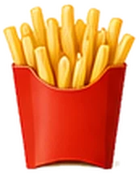
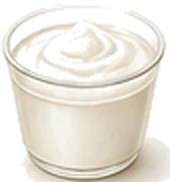
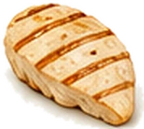
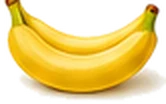
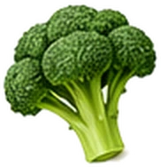

Alcohol and Gallstones: Can You Drink with Gallstones?
It's one of the first things people ask after a gallstones diagnosis, usually with a weekend, a wedding or Christmas in mind. The honest answer is more reassuring than you might expect, with some important exceptions.
 Not sure what else is safe? Get every food sorted on one printable page. Get the free Gallstones Fridge Guide →
Not sure what else is safe? Get every food sorted on one printable page. Get the free Gallstones Fridge Guide →
What the research says
This is where it gets interesting. A 2022 review that pooled studies from around the world found that people who drink moderately are less likely to develop gallstones than people who don't drink. The pattern held for beer, wine and spirits.
Before you pour a celebratory glass, there's a catch. The same researchers then used genetic data, a method that's better at telling cause from coincidence, and found no sign that ordinary drinking actually protects against gallstones. Problem drinking, on the other hand, was linked with slightly more gallstones.
So the fair summary is this: moderate drinking doesn't seem to cause gallstones, but it doesn't treat or prevent them either. Nobody should start drinking because of their gallbladder.
The real risk: alcohol, gallstones and your pancreas
This is the part most websites skip. According to the NHS, gallstones and alcohol are the two main causes of acute pancreatitis, a painful and sometimes serious inflammation of the pancreas. A stone that slips out of the gallbladder can block the duct the pancreas shares, and heavy drinking puts extra strain on the pancreas too.
If you have gallstones, you already have one of the two big risk factors. That's a good reason to keep drinking well within the UK low-risk guideline of no more than 14 units a week, spread over three or more days. And if you've ever had pancreatitis, you'll normally be advised not to drink at all.
Which drinks are best and worst with gallstones?
Most alcoholic drinks contain no fat at all, so they don't directly ask your gallbladder to work. The differences come from cream, coconut, sugar and sheer volume.
| Drink | Verdict | What to know |
|---|---|---|
| Spirits with a slimline or diet mixer | Amber | No fat, small volume. Keep measures single. |
| Dry white, red or rosé wine | Amber | No fat. A small (125ml) glass is about 1.5 units. |
| Beer, lager and cider | Amber | No fat, but large volumes can leave you bloated and uncomfortable. |
| Prosecco and sparkling wine | Amber | No fat, though the bubbles bother some people. |
| Cream liqueurs (Irish cream and similar) | Red | Made with real cream, so they're high in fat. |
| Creamy cocktails (piña colada, White Russian, eggnog) | Red | Coconut cream, cream or egg yolk push the fat right up. |
It's usually the food, not the drink
Think about what normally goes with a night out: crisps and nuts at the bar, a takeaway on the way home, a full English the next morning. Those are exactly the large, fatty meals most likely to set off a gallbladder attack.
If you're going to drink, a few simple habits make a big difference:
- Eat a light, low-fat meal first, such as grilled chicken with rice or a jacket potato with beans.
- Alternate every drink with a glass of water.
- Plan the late-night food. Skip the kebab and chips; have toast or a bowl of cereal with skimmed milk at home.
- Choose a lighter breakfast the next day: poached eggs on toast instead of a fry-up.
- Check your medicines. Some painkillers used for gallstone pain, such as codeine, shouldn't be mixed with alcohol. Ask your pharmacist.
When to avoid alcohol completely
- During a flare-up or while you're still sore from a recent attack
- If you've ever had pancreatitis
- If you have yellowing of the skin or eyes, or any liver problem
- In the run-up to surgery, if your team has advised it
- If your medicines say not to drink
The bottom line
You don't have to become teetotal because you have gallstones. A single drink with a light meal is fine for many people. Keep within 14 units a week, skip the creamy drinks, and be strict about the food that comes with drinking. If you've had pancreatitis, alcohol is off the table.
When to get help straight away
Get urgent advice from your GP or NHS 111 if tummy pain lasts longer than 30 minutes. Call 999 or go to A&E if you have:
- sudden, severe tummy pain
- pain spreading to your back, with vomiting
- a very high temperature, or you feel hot, cold or shivery
- yellow skin or yellowing in the whites of your eyes
Don't drive yourself. No food or drink on this site replaces medical care.
Questions people ask
Can I drink alcohol with gallstones?
Many people with gallstones can have a small amount of alcohol without problems, especially spirits or wine with a low-fat meal. Avoid it during a flare-up, if you've ever had pancreatitis, or if your doctor has told you not to drink.
Does alcohol cause gallstones?
Not in the usual sense. Studies of large groups have actually linked moderate drinking with fewer gallstones, but genetic research suggests ordinary drinking doesn't cause or prevent them. Heavy drinking is harmful in many other ways, including to your liver and pancreas.
Can alcohol trigger a gallbladder attack?
The drink itself is rarely the main trigger. The fatty food that often comes with it (a takeaway, pub food or a fry-up the next morning) is far more likely to cause an attack. Creamy drinks like cream liqueurs are an exception.
Is red wine good for gallstones?
There's no good evidence that red wine helps gallstones. It contains no fat, so a small glass with a light meal is fine for many people, but don't start drinking for health reasons.
Is beer bad for gallstones?
Beer and lager contain no fat. The problems are the volume, which can leave you bloated, and the snacks that go with it. A single drink is usually fine; several pints with crisps and a kebab is a different story.
Can I drink alcohol while waiting for gallbladder surgery?
Ask your surgical team. Many advise cutting down or stopping in the weeks before an operation. If you've had pancreatitis caused by gallstones, you'll usually be told to avoid alcohol completely.
More food guides
 Foods to avoid with gallstonesThe complete list of common triggers, with easy swaps.
Foods to avoid with gallstonesThe complete list of common triggers, with easy swaps.
Fried food and gallstonesThe number one trigger, and how to keep the crunch.
Milk and gallstonesWhole, skimmed or oat? Every milk compared. Cheese and gallstonesLightest to heaviest, with safe portion sizes.
Cheese and gallstonesLightest to heaviest, with safe portion sizes.
Eggs and gallstonesWhy the white and the yolk get different verdicts.
Bananas and gallstonesOne of the safest fruits you can eat, even on a bad day.
The complete gallstones dietEvery food sorted into choose, limit and avoid. Gallbladder painWhere it hurts, what triggers it and when to get help.
Gallbladder painWhere it hurts, what triggers it and when to get help.